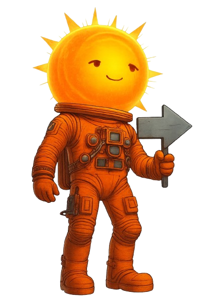

☀️ The Sun, Our Friend in Space! 🚀
Did you know that the Sun does more than just warm us? It creates "Space Weather"! Click and find out!
Check out the story of Astro Sun and Space Weather
✨ The Temperament of the Sun
Solar Wind
It is the breath of the Sun, a river of particles traveling through space. Different regions on the Sun produce solar wind of different speeds and densities, and high speed winds bring geomagnetic storms while slow speed winds bring calm space weather. Find out more on the website
Spasms (Eruptions)
When the Sun sneezes! A lot of energy is released at once. This can generate a Geomagnetic Storm which can cause radio blackouts and Auroras, but thanks to our planet's magnetic field and atmosphere, these events do not cause direct harm to us humans. Watch the video if you want to know more
🌌 Magic Lights (Auroras)
The sun's most beautiful "superpower" occurs when solar particles collide with Earth's shield, creating a colorful light show! These lights are called auroras! But not everything is rosy.CLICK HERE to discover the impacts of solar flares and space weather on society recorded in Canada.
🛡️ The Protective Shield of Earth
Our planet has an invisible armor called a Magnetic Field that protects us. It's super important for:
- Keep our cell phones and GPS working.
- Protect satellites in the sky.
- Ensure the safety of astronauts.